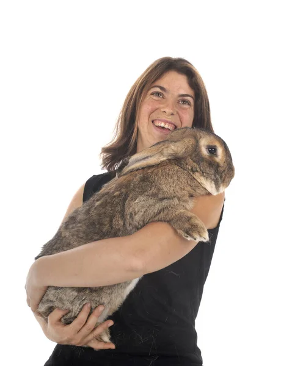

Olbrzym Belgijski to największa rasa królików na świecie. Te majestatyczne zwierzęta budzą podziw swoimi imponującymi rozmiarami, silną budową ciała oraz długimi, stojącymi uszami. Mimo swoich potężnych gabarytów, olbrzymy są znane ze swojego niezwykle spokojnego i flegmatycznego wręcz usposobienia. Najważniejsze cechy rasy: Wygląd: Długie, muskularne ciało, potężna głowa oraz uszy, które mogą osiągać ponad 20 cm długości. Waga: Standardowo od 6 do 8 kg, choć rekordowe osobniki ważą nawet ponad 10 kg. Charakter: Niezwykle zrównoważone, łagodne i ufne olbrzymy, często nazywane "łagodnymi olbrzymami". Przestrzeń: Ze względu na swoje gabaryty wymagają bardzo dużej przestrzeni do życia i solidnego wybiegu.